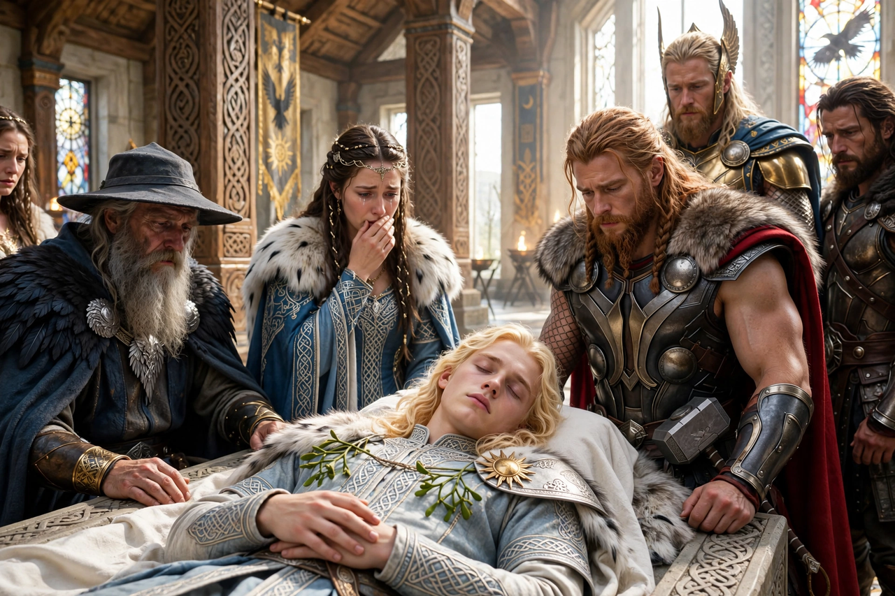

From Wikipedia, the free encyclopedia
| Baldr | |
|---|---|
| Affiliation | Æsir; god of light, purity and beauty (in later interpretation) |
| Parents | Odin and Frigg |
| Spouse | Nanna |
| Son | Forseti |
| Death | Killed by a mistletoe dart thrown by Höðr at Loki's instigation |
| Realm | Breidablik |

Baldr (Old Norse Baldr, sometimes anglicised Balder) is a god of Norse mythology, son of Odin and Frigg, famed for his beauty, fairness and wisdom. His death — the first great tragedy of the Norse mythic cycle — is one of the best-known episodes in the Prose Edda and Poetic Edda, and his prophesied return after Ragnarök offers the cycle's note of hope. His hall is Breidablik, the purest place in Asgard, and his ship Hringhorni was said to be the greatest of all ships.
Troubled by dreams of his own death, Baldr told the gods, and Frigg extracted oaths from every thing in the world — fire and water, metals, stones, trees, diseases, beasts and birds — not to harm him. The gods amused themselves by throwing weapons at Baldr, who stood unharmed. But Frigg had overlooked the mistletoe, judging it too young and harmless. Loki, learning this, fashioned a dart or arrow of mistletoe and guided the hand of Baldr's blind brother Höðr to throw it; Baldr fell dead. The god Hermod rode to Hel to plead for his return, and Hel agreed to release Baldr if all things, living and dead, wept for him. All did — except, in the Eddic account, a giantess named Þökk, widely understood to be Loki in disguise, so Baldr remained among the dead.
Baldr's body was borne to Hringhorni and burned on the greatest of funeral pyres; his wife Nanna died of grief and was placed beside him, and Odin laid the ring Draupnir on the pyre. The killing set in motion the gods' vengeance: Loki was eventually bound in a cavern, and the events leading to Ragnarök follow. In the reborn world after Ragnarök, Baldr is prophesied to return from Hel with Höðr, and the two will sit reconciled in the new age.
The fullest account is Snorri Sturluson's Gylfaginning; the Danish historian Saxo Grammaticus tells a markedly different, euhemerised version in which Balderus and Høtherus are rival human princes. Parallels with other dying-and-returning figures have often been noted by scholars, though direct borrowing is debated.
Freyja · Loki · Odin · Ragnarok · Norse mythology